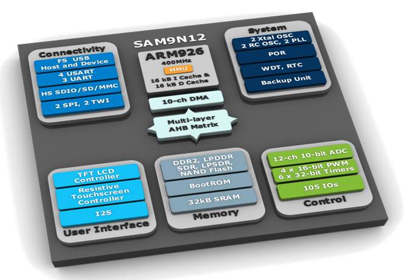
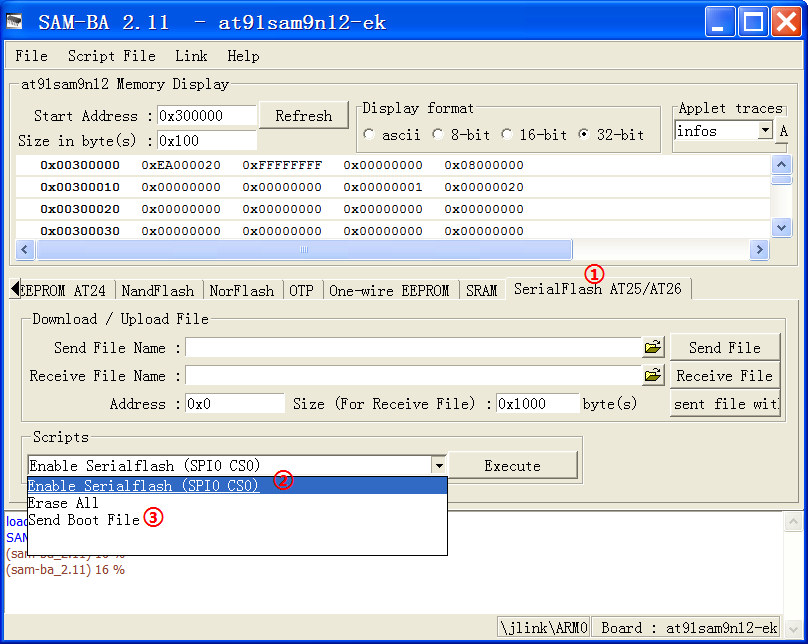

AT91SAM9N12-EK Special Page
(for SAM9N12, SAM9CN12, SAM9CN11)
Introduction
| Welcome to the Linux4SAM page dedicated to the newly introduced AT91SAM9N12-EK board.
|
 |
GettingStarted
| |
Basic components
AT91Bootstrap
Pre-built binaries
| !BootingMedia | Description | Binary |
|---|---|---|
| SerialFlash | AT91Bootstrap binary with 2nd level application in SerialFlash | boot.bin |
| SDCard | AT91Bootstrap binary with 2nd level application in Micro SD Card | at91sam9n12ek-sdcardboot-3.2.bin Rename it as BOOT.BIN while loading it on SD card. |
Boot capabilities matrix
Here is :| Product | Boot from SerialFlash (SPI0 CS0) |
Boot from SerialFlash (SPI0 CS1) |
Boot from NAND Flash |
Boot from SD card |
Boot from TWI EEPROM |
|---|---|---|---|---|---|
| AT91SAM9N12-EK | |
|
|
|
|
Using AT91Bootstrap binaries
Boot from Serial Flash with AT91Bootstrap
You need to use SAM-BA to flash AT91Bootstrap. Here we are assuming you want to boot from Serial Flash: - Choose the SerialFlash AT25/AT26 tab in the SAM-BA GUI.
- Initialize the media choosing the Enable Serialflash (SPI0_CS0) action in the Scripts rolling menu and press Execute.
- Select Send Boot File in the Scripts rolling menu and press Execute. Then select the bootstrap file and press Open; the media is written down.
- Close SAM-BA, remove the USB cable.
Boot from SD card with AT91Bootstrap
You can boot from SD card. To do this, you will need an SD Card with the first partition formated as FAT32. Then you will need to copy the AT91Bootstrap binary file and the U-Boot binary file. These files must be respectively named BOOT.BIN (AT91Bootstrap image file) and u-boot.bin (U-Boot file).Building AT91Bootstrap
AT91Booststrap has been created by Atmel to ease the loading of binaries from several boot media. The revision created for AT91SAM9N12-EK is available on www.linux4sam.org FTP site: at91bootstrap_9n12.tar.gzGetting AT91Bootstrap source code
You can get AT91Bootstrap source code:$ wget ftp://ftp.linux4sam.org/pub/at91bootstrap/AT91Bootstrap3.2/at91bootstrap_9n12.tar.gz $ tar xvzf at91bootstrap_9n12.tar.gz $ cd at91bootstrap
Configuring AT91Bootstrap and choosing the boot media
Before building AT91Bootstrap, you need to configure it for AT91SAM9N12-EK board and to indicate where you want your third stage bootloader to be located: in this example it will be U-Boot. If you want to run it from Serial FLASH use:$ make at91sam9n12df_defconfigAnd if you want to run it from the SD card use:
$ make at91sam9n12sd_defconfig
CROSS_COMPILE variable. This will be explained later.
Then you can customize the AT91Bootstrap configuration further with:
$ make menuconfig
Compiling AT91Bootstrap
Now you can cross-compile the AT91Bootstrap:$ make CROSS_COMPILE=<path_to_cross-compiler/cross-compiler-prefix-><path_to_cross-compiler> is only needed if it is not in your PATH. Usually cross-compiler-prefix- looks like
arm-linux- , arm-elf- or arm-none-linux-gnueabi- .
The result of this operation is a fresh AT91Bootstrap binary located in the binaries directory and called at91sam9n12ek-xxxboot-3.2.bin corresponding to the binary ELF file called at91sam9n12ek-xxxboot-3.2.elf.
-
at91sam9n12ek-dataflashboot-3.2.binis the binary file able to boot the application located in Serial Flash. -
at91sam9n12ek-sdcardboot-3.2.binis the binary file able to boot the application calledu-boot.binlocated in the FAT32 formated SD card.
U-Boot
U-Boot binaries
Here are the U-Boot binaries, in this example the U-Boot environment is located into the SerialFlash.| Booting Media | Description | Binary |
|---|---|---|
| !SerialFlash | U-Boot binary with environment in SerialFlash Based on U-Boot revision 2011.06 |
u-boot.bin |
U-Boot 2011.06 experimental patch
| Description | Source | Patch |
|---|---|---|
| Add at91sam9n12 support to AT91 u-boot | U-Boot 2011.06 archive U-Boot 2011.06 tag on git tree |
U-Boot-9n12_m2.patch |
Flashing U-Boot
You will have to use SAM-BA to flash U-Boot. Here we are assuming you want to put U-Boot and its environment into the Serial Flash:- Choose the SerialFlash media tab in the SAM-BA GUI.
- Initialize the media choosing the Enable Serialflash action in the Scripts rolling menu and press Execute.
- Specify 0x8400 as the address of the U-Boot image.
- Click the icon button to choose the U-Boot image file.
- Press Send File button.
- Close SAM-BA, remove the USB cable
Building U-Boot
Getting U-Boot source code
You need to get U-Boot source code:$ wget ftp://ftp.denx.de/pub/u-boot/u-boot-2011.06.tar.bz2 $ tar xvjf u-boot-2011.06.tar.bz2 $ cd u-boot-2011.06Or by using GIT:
$ git clone http://git.denx.de/u-boot.git $ cd u-boot $ git checkout v2011.06 -b yourbranchThen apply the at91 AT91SAM9N12 patch:
$ wget ftp://ftp.linux4sam.org/pub/uboot/u-boot-v2011.06/u-boot-9n12_m2.patch $ patch -p1 < u-boot-9n12_m2.patch
Configuring and Compiling U-Boot
First you should indicate the cross-compiler to U-Boot:$export CROSS_COMPILE=<path_to_cross-compiler/cross-compiler-prefix-><path_to_cross-compiler> is only needed if it is not in your PATH. Usually cross-compiler-prefix- looks like
arm-linux- , arm-elf- or arm-none-linux-gnueabi- .
And now you can compile U-Boot. If you want to compile it for Serial Flash:
$ make at91sam9n12ek_dataflash_cs0The result of this operation is a fresh u-boot binary called
u-boot.bin corresponding to the binary ELF file called u-boot.
-
u-boot.binis the file you should store on the board. -
u-bootis the ELF format binary file you may use to debug u-boot through a JTAG link for instance.
Linux Kernel
Pre-built image
| 2.6.39 (2.6.39-at91sam9n12-exp.tar.gz) | ||
|---|---|---|
| Board | Description | Binary |
| at91sam9n12ek | linux-2.6.39 uImage configured by at91sam9n12ek_defconfig \ |
uImage-2.6.39-m2-at91sam9n12ek.bin |
Flashing the Linux kernel image
Using SAM-BA
The procedures to flash the kernel image by using SAM-BA:- Choose the SerialFlash media tab in the SAM-BA GUI.
- Initialize the media choosing the Enable Serialflash action in the Scripts rolling menu and press Execute.
- Specify 0x100000 as the address of Linux kernel image
- Press Browse Button and choose your kernel image.
- Press Send File button.
- Close SAM-BA, remove the USB cable.
Using U-Boot
You can also flash the kernel image with U-Boot. You must have configured your network access in U-Boot as the binary image will be transferred to the target using TFTP protocol.Type the following commands:
tftp 0x22000000 uImage-2.6.39-m2-at91sam9n12ek.bin sf probe 0 sf erase 0x100000 0x300000 sf write 0x22000000 0x100000 0x250000 bootNote that last parameter is the actual size of the binary written. You may adapt it to the size of your kernel image.
Linux4SAM AT91SAM9N12 Experimental Patches
2.6.39-at91sam9n12-exp.tar.gz
- Support for AT91SAM9N12 SoC
- DMA use on SD/MMC, SSC (I2S) audio, SPI and NAND flash peripherals
- NAND hardware ECC support using PMECC controller
- LCD with one base layer
- Qtouch touch button
- USB Full-Speed and Ethernet (Through EBI interface)
AT91SAM9n12 Linux kernel sources summary table
| Linux Kernel revision | Vanilla Linux Kernel | AT91 Maintainer patchset | Experimental patches |
|---|---|---|---|
| |
linux-2.6.39.tar.bz2 |
Not needed \ | 2.6.39-at91sam9n12-exp.tar.gz |
Building Linux kernel
Getting source code
The AT91SAM9N12 patch is based on the 2.6.39 Linux kernel version, so the first step is to get it:$ wget http://www.kernel.org/pub/linux/kernel/v2.6/linux-2.6.39.tar.bz2 $ tar xvjf linux-2.6.39.tar.bz2 $ cd linux-2.6.39Now you need to apply the Atmel patch series:
Download experimental patch archive:
$ wget ftp://ftp.linux4sam.org/pub/linux/2.6.39-at91/2.6.39-at91sam9n12-exp.tar.gzDecompress archive with:
$ tar xvzf 2.6.39-at91sam9n12-exp.tar.gzAnd then apply patchset one patch after the other in proper order:
$ patch -p1 < 2.6.39-at91-exp.patch
Configuring and building the kernel
Firstly, use the 9n12ek default kernel configuration:$ make ARCH=arm at91sam9n12ek_defconfigThen you can customize the kernel configuration further with:
$ make ARCH=arm menuconfigBuild the Linux kernel image:
$ make ARCH=arm CROSS_COMPILE=<path_to_cross-compiler/cross-compiler-prefix-><path_to_cross-compiler> is only needed if it is not in your PATH. Usually cross-compiler-prefix- looks like
arm-linux- , arm-elf- or arm-none-linux-gnueabi- .
To produce a kernel image suitable for U-Boot:
mkimage -A arm -O linux -C none -T kernel -a 20008000 -e 20008000 -n linux-2.6 -d arch/arm/boot/zImage uImage.bin
Open source embedded distribution solutions
OpenEmbedded / QTDemo
OpenEmbedded 2011.03 QT Demo Binaries
| Board | Description | Binary |
|---|---|---|
| AT91SAM9N12-EK | QT Demo image tailored for AT91 UBI root filesystem | Angstrom-qt4e-at91sam9n12ek-image-eglibc-ipk-v20120109-at91sam9n12ek.rootfs.ubi |
Flashing the root file system
Connect to the Flashing the root file system page to know how to deploy this UBI/UBIFS image on NAND flash.How to build QT Demo for AT91SAM9N12-EK
Dedicated page that explains how to build QT Demo for AT91SAM9N12-EK. It explains the procedure to get an QT Demo UBI/UBIFS image. QT Demo is based on the OpenEmbeddedBuildroot
Buildroot 2011.05 binaries
The Root filesystem image is for all AT91SAM9N12-EK board. It's provided as a UBI image for NAND FLASH memory with page size of 2KBytes.| Board | Description | Binary |
|---|---|---|
| at91sam9n12ek | BuildRoot image tailored for AT91 UBI root filesystem | buildroot_2011.05-at91_9n12_m2.ubi |
Flashing the root file system
Connect to the Flashing the root file system page to know how to deploy this UBI/UBIFS image on NAND flash.How to build BuildRoot for AT91SAM9N12-EK
Dedicated page that explains how to build BuildRoot for AT91SAM9N12-EK. It explains the procedure to build a BuildRoot UBI/UBIFS image.FAQ
FAQ about AT91SAM9N12-EKr13 - 15 Jun 2017 - 14:14:39 - NicolasFerre

Copyright © by the contributing authors. All material on this collaboration platform is the property of the contributing authors.
Linux® is the registered trademark of Linus Torvalds in the U.S. and other countries.
Microchip® and others, are registered trademarks or trademarks of Microchip Technology Inc. and its subsidiaries. 
Arm® and others are registered trademarks or trademarks of Arm Limited (or its affiliates). Other terms and product names may be trademarks of others.
Ideas, requests, contributions ? Connect to LinksToCommunities page.